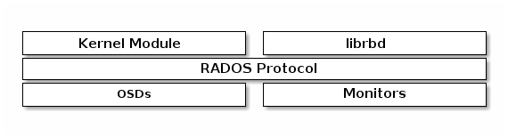

Ceph 块设备¶
块是一个字节序列（例如，一个 512 字节的一块数据），基于块的存储接口是最常见的存储数据方法，它们基于旋转媒体，像硬盘、 CD 、软盘、甚至传统的 9 磁道磁带。无处不在的块设备接口使虚拟块设备成为与 Ceph 这样的海量存储系统交互的理想之选。
Ceph 块设备是瘦接口、大小可调且数据条带化到集群内的多个 OSD 。 Ceph 块设备均衡多个 RADOS 能力，如快照、复制和一致性， Ceph 的 RADOS 块设备（ RBD ）用内核模块或 librbd 库与 OSD 交互。

Note
内核模块可使用 Linux 页缓存。对基于 librbd 的应用程序， Ceph 可提供 RBD 缓存。
Ceph 块设备靠无限伸缩性提供了高性能，如向内核模块、或向 abbr:KVM (kernel virtual machines) （如 Qemu 、依赖 libvirt 和 Qemu 的 OpenStack 和 CloudStack 云计算系统都可与 Ceph 块设备集成）。你可以用同一个集群同时运行 Ceph RADOS 网关、 Ceph FS 文件系统、和 Ceph 块设备。
Important
要使用 Ceph 块设备，你必须有一个在运行的 Ceph 集群。